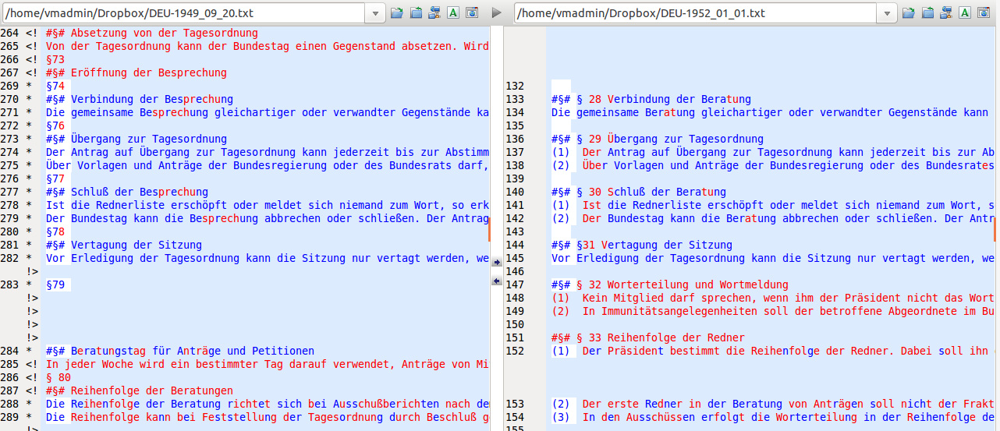

ISOR Coding Procedures
pm/bm
2015-12-07 13:27:03
1 Introduction
To collect data on reforms to Standing Orders many steps had to be taken and many hands had to help. The basic idea was that two proceeding versions of the same text can be compared by putting them side by side and going through each (sub)-paragraph.
| lnr1 | old | lnr2 | new |
|---|---|---|---|
| 1 | Three kind mice, see how they run! | 1 | Three blind mice, see how they run! |
| 2 | They all ran after the farmer’s wife, | 2 | They all ran after the farmer’s wife, |
| 3 | Who cut off their tails with the carving knife, | 3 | they took out some cheese, |
| 4 | Did you ever see such a thing in your life? | 4 | and they cut her a slice, |
| 5 | As three blind mice. | 5 | Did you ever see such a sight in your life |
| 6 | End | 6 | as three kind mice? |
Some parts might have changed, others might not have changed but were put at a different locations. Those parts that have been changed might have been deleted, modified or inserted.
| lnr1 | old | lnr2 | new | bowdist | type |
|---|---|---|---|---|---|
| 1 | Three kind mice, see how th … | 1 | Three blind mice, see how t … | 2 | change |
| 2 | They all ran after the farm … | 2 | They all ran after the farm … | 0 | no change |
| 3 | Who cut off their tails wit … | 4 | and they cut her a slice, … | 13 | change |
| 3 | they took out some cheese, … | 5 | insertion | ||
| 4 | Did you ever see such a thi … | 5 | Did you ever see such a sig … | 2 | change |
| 5 | As three blind mice. … | 6 | as three kind mice? … | 4 | change |
| 6 | End … | 1 | deletion |
To gather changes in that manner the first task is to acquire all the documents that describe the status or evolution of a particular set of Standing Orders. That step incorporated finding contact persons within the parliaments and checking for completeness and consistency of the provided ‘historical’ documents.
While intuitively one might think about Standing Orders as fully written out, explicit documents most of the time this is only but a little part of the story. While so called consolidated versions exist, most of the time one needs a consolidated version and all the amendments (short, technical instructions of how to transform Standing Orders in place to a new set of Standing Orders) made to that version over time to know which set of rules was in place at a certain point in time. To apply the basic idea all amendments had to be transformed into consolidated versions.
Documents were provided in differing form and in differing shades of quality. There might be sheets of paper, Books, Word-documents, machine readable PDFs or scans. All those various types were first transformed to Word-documents and later on freed of transformation errors and artifacts in a cleaning step.
After cleaning and consolidation documents were restructured in such a way that each sub-paragraph corresponded to one line in a plain text file. Furthermore, lines without relevant content such as headlines or notes were marked by #§#. The restructuring made it easy for the documents to be read in by the coding programs used in the following steps.
For comparing Standing Orders effectively we made use of two types of programs: First there are programs specialized in presenting the comparison of documents to humans. Second, there are programs that are less accessible by humans but more standardized and therefore better suited to serve as helpers for computer programs. While we found good companions in the first category – e.g. UltraCompare, the Notepad++ Compare Plugin, DiffDoc, WinMerge, … see: https://en.wikipedia.org/wiki/Comparison_of_file_comparison_tools, for a list) – we did not find any tool that suited our needs in the second category – i.e. indicating line modifications and measuring differences.
Therefore we wrote our own software that helped with comparing texts, assigning change types and measuring differences. Three programs were written: The frist for comparing documents, gathering links between sub-paragraph from one version to the other, assigning change types an measuring change; the second for coding changes between documents as minority or majority friendly; the third for coding sub-paragraphs into categories capturing the type of regulation.
The data gathered with help of the programs than was merged into one database with three tables - meta information on the Standing Orders (texts), the text of the Standing Orders and accompanied data (textlines) and how sub-paragraphs from one version are linked those of another version (textlines). Thereafter the information were checked for errors. After elimanting all errors the raw information from the database was then aggregated to various formats.
2 Document Transformation
The original Standing Orders documents gathered often were books or came as scans in PDF format. To be able to further work with them the text had to be brought into computer readable format. This first digital format of the Standing Orders text was Word. Although, the texts later on were further broken down into plain text, Word is a good intermediate format since everyone is familiar with it and it is able to emulate the layout of the original document which eases comparisons between original and digital version.
 Figure 1: 1952 German Bundestag Standing Orders word-document
Figure 1: 1952 German Bundestag Standing Orders word-document
3 Document Consolidation
In order to construct a data base consisting of all parliamentary standing orders that were in force at a specific point in time consolidated versions of the standing orders were needed. Consolidated versions are complete versions with all changes that had occurred at a specific date included in the body of the text.
However, there are often only few consolidated versions provided by national parliaments. Changes to the standing orders are most of the time published as amendments and only once in a while a full version of the current text is issued. As a consequence, consolidated versions of the standing orders for every date of change had to be constructed by inserting manually the changes into the previous complete version.
 Figure 2: List of ammendments to the 1950 SO UK, page 497
Figure 2: List of ammendments to the 1950 SO UK, page 497
4 Document Cleaning
The aim of this procedure was to identify and correct errors that had occurred through the process of converting PDF-documents into Word-documents. Another purpose was to put the cleaned versions of the parliamentary standing orders in a standardized format while maintaining the original structure of paragraphs. First of all, the oldest consolidated version of the parliamentary standing orders of the single countries was completely read through and corrected manually. Typos, unnecessary line breaks, signs not belonging to the text and everything going beyond the actual text of the standing orders was deleted.
Next, a header containing information about the version such as the dates of acceptance, promulgation and enactment of the version of the standing orders was inserted. The version cleaned in this manner served as reference version. In the following step the subsequent consolidated version was compared to the reference version using the software DiffDoc (in a later state of the cleaning process the software UltraCompare was used instead). The software made it possible to easily identify identical parts of the two versions that only contained few mistakes to be corrected as well as parts that had been changed. The latter were read completely and handled like the first version. After the cleaning of the second version it served as new reference version for the subsequent consolidated version of the standing orders. Alongside cleaning the text, it was made sure that each sub-paragraph, headline or other structuring element of the standing orders was given a single line. Each element was separated by a line break; no element was allowed to spread more than one line. The steps were repeated for all consolidated versions. Throughout the procedure the PDF-versions of the standing orders were considered in case of uncertainty regarding cleaning decisions. In a last step the lines (representing text elements) that were of non-relevant content (e.g. headlines) were marked by adding a special string at the start of the line (‘#§#’) to allow the computer to automatically dismiss these lines later on.
 Figure 2: 1952 SO Germany plain-text version
Figure 2: 1952 SO Germany plain-text version
5 Linkage
Having generated complete, cleaned versions of the standing orders, the next step was to further prepare the data so that the content of the standing orders could be coded in an efficient manner and to get information about what had or had not changed from one version to the next. For this purpose changes in the standing orders between versions were linked. This means that for each line of text (each relevant sub-paragraph) it was recorded whether or not the line was deleted in the version to come, got inserted in the current version, got changed or simply stayed the same. The coding was done semi-automatically by first letting an algorithm developed by the project and implemented in R handle all non-relevant lines as well as those that were not changed. Thereafter human coders went through all remaining text lines of two subsequent versions to add there linkage information to the data-set. For this another program implemented in R helped the coders by making sure that: all lines were coded; the information was recorded correct and alongside the text that was linked, coders were given suggestions for possible matching lines similar to that under consideration. As the linked files depicted the basis for later analyzes and coding, it was crucial to differentiate between minor reformulations of paragraphs (e.g. mere orthographic reforms) and actual changes. In case of doubt the supervisors were consulted.
library(stringr)
library(diffr)
# defining text
old <- str_split("Three kind mice, see how they run!\nThey all ran after the farmer's wife,\nWho cut off their tails with the carving knife,\nDid you ever see such a thing in your life?\nAs three blind mice.\nEnd", "\n")
new <- str_split("Three blind mice, see how they run!\nThey all ran after the farmer's wife,\nthey took out some cheese,\nand they cut her a slice,\nDid you ever see such a sight in your life\nas three kind mice?", "\n")
# calculating distances, aligning text, determining change types
res <- diffr(old, new, dist="bow")
# distance matrix
res$distance_matrix## [,1] [,2] [,3] [,4] [,5] [,6]
## [1,] 2 15 10 11 15 7
## [2,] 15 0 13 14 18 12
## [3,] 16 15 14 13 19 13
## [4,] 15 18 15 14 2 14
## [5,] 7 12 9 10 14 4
## [6,] 8 9 6 7 11 5# resulting alignment and change type
res$alignment_df## lnr1 lnr2 distance type
## 1 1 1 2 change
## 2 2 2 0 no change
## 3 3 4 13 change
## 7 NA 3 5 insertion
## 4 4 5 2 change
## 5 5 6 4 change
## 6 6 NA 1 deletionCode Snippet 1: Text comparison with own software written in R
The process of gathering link information between sub-paragraphs of subsequent standing orders versions allows for distinguishing between types of change (deletion, insertion, modification and no-change), measuring its extent more precisely and to later transfer line codes from one version of the standing orders to another so that all sub-paragraphs (the selected coding entity) that were identical in two versions got automatically the same code.
Furthermore, the use of an semi-automatic approach allows to use the strengths of both computers and humans: computers are good at doing the same stuff over and over again in the same and predictable way - e.g. finding identical lines, computing measures of similarity, saving data always in the very same format – while humans on the other hand have a much better understanding of the content of text, might understand intentions of the text authors and are more creative and flexible – e.g. finding line pairs that might be not very similar based on the sequence of characters or the distribution of words but in regard to the things that are regulated within.
 Figure 3: Text version comparison in human friendly program.
6 Minority-Majority-Change Coding
7 Corpus Coding
Based on the linked versions of the standing orders the content could be coded. The intention of the so called corpus coding process was to assign a single code expressing the content to every legal sub-paragraph of every version of the standing orders.
The coding scheme comprises 80 different single codes belonging to ten different categories (law-making, special decision procedures other than regular law-making, relationship to government, relationship to external offices/institutions apart from the government, generating publicity, internal organization of parliament, change and interpretation of the standing orders, general rules regarding formation and legislative session/discontinuity, final provisions, miscellaneous (cannot be coded otherwise)).
Apart from the codes the coding manual encompasses general rules for coding. As every sub-paragraph got only one code the coders had to decide which code suites best even if several different codes could be assigned to a sub-paragraph. These decisions were based on a specific hierarchy of codes. Rules which concern the interaction of two actors were attributed to the actor which takes the active part if he has discretion regarding this action. Regular law-making was considered more important than other decision procedures if they were treated together in one sub-paragraph. A further general coding rule was to take the overall context into account instead of just looking at a specific regulation.
Like the other coding processes corpus coding was done semi-automatically with a self-written program implemented in R. Human coders went through the oldest version of the standing orders and assigned the appropriate codes from the coding scheme to every text line to create one fully coded version. The next step was to transfer these codes to the other versions. As in the linking procedure text lines that have stayed exactly the same from one version to the following had been identified and linked, the R program automatically assigned the same codes to them. So the coders only had to go through the not coded text lines of the subsequent version of the standing orders (that is the passages that had been changed between two versions) and code them manually. Then, the new codes were transferred. The coders proceeded in this way until all versions of the standing orders were completely coded with regard to their content.
The original standing orders of national parliaments are usually only published in the language of the country. Thus, coders were recruited who were either native speakers or non-native speakers with very high language proficiency. Good knowledge about the government system of the countries was a further requirement. As corpus coding was a very demanding task, all coders got intensive training. First, the coders familiarized themselves with the coding manual, the different categories and coding rules. Next, the new coders practiced through joint coding with experienced coders. After this, the coders coded the most recent version of the standing orders and compared their results to a master version. Usually the most recent versions of the standing orders are also issued in English. These versions had been coded by those responsible for the project and served as master versions. On condition that coders mastered this task they could start coding on their own. Throughout the coding process ambiguities and problems were solved in joint discussion with the project coordinators. If it was necessary, supplementary documents such as constitutions and information from the webpages of the national parliaments were considered to check coding decisions.
7.1 Coding Scheme
7.1.1 Basic Intuition:
Each and every code is exclusive, meaning that one sub-paragraph needs to have one code but one code only. For some codes there are notes on how to decide between multiple codes which may seem appropriate. Sometimes even the coding rules and additional notes will not help to decide between codes. In this case please let us know. Every decision accompanied by doubt should be documented.
7.1.2 Further rules of the game:
Often sub-paragraphs can be coded differently, depending on whether or not one takes into consideration the overall context of the rule or the more specific regulation. If in doubt, code based on the overall context. Example: §14 GOBT: president grants vacation time → coded as rights and obligations of individual members of parliament if one takes into account the general context (652) and not as responsibility of the president (6212).
Rules which concern the interaction of two actors are attributed to the actor which takes the active part if he has discretion regarding this action. Example: §62 (2) GOBT: The plenary can request report of committee → coded as recall through the plenary (124) and not as report of committee to the plenary (134).
The right of those initiating a bill or law to be present at the committee meetings is coded as general right of individual members of parliament (652).
7.1.3 Scheme
(1) Law Making
Note: SPs that refer to both the plenary sessions and committees are coded as 12x; SPs dealing with both law-making and special decision procedures are coded as 1xx.
- 11 Bills and Motions
- 111 types of bills and motions; printing and distribution of bills and motions to MPs
- 112 right to initiate bills and motions
- 113 restrictions and deadlines (if not assignable to more specific category, e.g. code 121; 32; 134)
- 114 legislative planning (concerns the whole term- general schedule)
- 12 Treatment of bills and motions in the plenary (Note: SPs including all stages of the treatment of bills and motions are coded as votes in the plenary (123); SPs which determine the subject of debate and vote are coded as subject of vote (123).)
- 121 debate in the plenary
- 122 right of amendment in the plenary
- 123 subject of vote, rules of vote (including quorum), voting technology in the plenary
- 124 the plenary as Committee of the Whole House (Note: SPs referring to both committees and Committee of the Whole House are coded as committees (not 124 but 13x).)
- 125 referral to committee, withdrawal from committee
- 13 Treatment of bills and motions in committee (Note: SPs including all stages of the treatment of bills and motions in committee are coded as votes in committee (133); SPs which determine both the subject of debate and the subject of vote are coded as subject of vote in committee (133).)
- 131 debate in committee (including hearing)
- 132 amendment rights in committee
- 133 subject of vote, rules of vote (including quorum), voting technology in committee
- 134 report to the plenary
(2) Special Decision Procedures other than Regular Law-Making
Note: SPs which concern multiple special decision procedures apart from regular law-making are coded as follows: highest priority is given to constitutional matters, second highest priority is given to financial laws and budgeting, third highest priority is given to EU policy and fourth highest priority is given toforeign policy.
- 21 constitutional change and amendment
- 22 financial laws (money bills) and budgeting
- 23 foreign policy (e.g. approval of law of nations, declaration of war Note: If foreign policy and EU is treated together, the SP is coded as EU (241, 242, 243 or 244).)
- 24 EU (Note: If foreign policy and EU is treated together, the SP is coded as EU (241, 242, 243 or 244))
- 241 treatment of EU-bills and motions
- 242 EU-committee: election and resignation
- 243 instructions to the government concerning EU decisions
- 244 further rights of participation in EU matters (e.g. debates about EU topics not based on EU bills and motions, reaction to violations of subsidiary principle)
- 25 general rules on elections in parliament (if not coded as election of government (31), or election of specific officials (411; 421; 441; 6211; 6221; 632))
- 26 further special decision procedures leading to a decision, e.g. resolution, or leading to a decree/act/bylaw (not mere debate or question time) but cannot be coded as regular law-making nor special decision procedures (21-24)
- 27 procedures concerning laws that are hierarchically situated between regular laws and constitutional laws (above regular laws; e.g. organic laws in Spain)
- 28 emergency legislation
- 29 relationship to sub-national level (law-making, rights of participation of sub-national level)
(3) Relationship to Government
Note: If vote of no confidence and vote of confidence is treated together, the SP is coded as vote of no confidence (32).
- 31 election of government / mandatory investiture vote; entry into office
- 32 vote of no confidence / government resignation
- 33 vote of confidence
- 34 instructions to government, involvement of members of government in parliamentary activities (rights to compel witnesses [usually right of parliament against members of government], right to speak [usually members of government’s right], request of information about state of execution of decisions of parliament)
(4) Relationship to External Offices/Institutions apart from the Government
- 41 parliamentary support bodies (e.g. general accounting office, ombudsman,…)
- 411 election and resignation
- 412 competences and resources of external offices/institutions; relations to parliament (e.g. reports, questions, …)
- 42 head of state
- 421 election and resignation
- 422 relation to parliament (if not coded as law-making (141, 144))
- 43 second chamber (if not coded as law-making (142))
- 44 constitutional courts
- 441 election and resignation
- 442 relation to parliament (if not coded as law-making (145))
- 45 other external offices
(5) Generating Publicity
- 51 general rules regarding debate (e.g. time allotted for speaking, proportional representation of parties during debate, closure of debate)
- 52 debates outside of law-making (e.g. topical hours …)
- 53 question rights
- 54 petitions and petition committee
- 55 relationship to media and citizens (e.g. parliamentary TV, accreditation of journalists, publicity of meetings, admissibility of visitors); regulation of matters of confidentiality
- 56 protocols and parliamentary documents; forwarding of documents and decisions to other bodies
6 Internal Organization of Parliament
- 61 plenary
- 611 agenda setting and removal of items from the agenda (general rules which are not specifically regulated under 114)
- 612 chairing of meetings and measures to uphold order
- 613 sitting times (Note: When members are to be present inside the parliament)
- 62 parliamentary presiding bodies
- 621 president of parliament, vice presidents, secretaries and clerks
- 6211 election, resignation and internal decision rules
- 6212 responsibilities (Note: if not coded as more specific category (e.g. 612), Try to code in regard to the topic at first - 6212 only when no code corresponds)
- 622 council of elders or similar coordination body (Note: The council of elders can be distinguished from the Presidency of Parliament (621) insofar as representatives of the parliamentary party groups are explicitly included.)
- 6221 composition, election, resignation, internal decision rules
- 6222 responsibilities (if not coded as more specific category (e.g. 612))
- 621 president of parliament, vice presidents, secretaries and clerks
- 63 committees (if not coded as more specific category (e.g. 13; 24; 54; 55; 72))
- 631 general regulations regarding types of committees
- 632 membership and committee jurisdiction (area of influence-control .g. finance, economy, agriculture…)
- 633 formal organizational units of committee (Note: e.g. chair of committee, sub-committees, staff; This is about the appointment and election of the organizational units within committees and NOT about their responsibilities.)
- 634 agenda and procedures (details on how decisions are taken) within committees (if not coded as law-making (13))
- 635 relations to other bodies
- 6351 relation to plenary (if not coded as 124; 134; 34)
- 6352 relation to other committees
- 636 investigative competencies of regular committees (NOT committees of inquiry (637))
- 637 committee of inquiry
- 638 enquête commission
- 639 other special committees which are not explicitly referenced in this coding manual (Note: e.g. oversight committees in Switzerland; Otherwise referenced are: EU-committee (242); committee of inquiry (637); petition committee (54); standing order committee (usually 72); council of elders or similar coordination body (622). Exception: committees which deal exclusively with the confirmation of the elections of members of parliament are coded as 651.)
- 64 parliamentary party groups
- 641 formation of parliamentary party groups
- 642 rights and obligations of parliamentary party groups (if not coded more specifically as e.g. 112; 51; 52; 53)
- 643 financial and staff resources
- 65 individual members of parliament
- 651 election, entry into office, resignation, incompatibilities, legal status, immunity, indemnity
- 652 rights and obligations of individual members of parliament (if not coded more specifically as e.g. 112; 51; 52; 53)
- 653 salary, financial and staff resources
- 66 opposition
- 67 special bodies for emergency situations
- 68 parliamentary administration
7 Change and Interpretation of the Standing Orders
- 71 rules regarding changing the standing orders
- 72 rules regarding interpretation of and deviation from standing orders
- 73 debate about standing orders and motions regarding the standing orders
8 General Rules Regarding Formation and Legislative Session; Discontinuity
9 Final Provisions
10 Miscellaneous (cannot be coded otherwise)
999 Footnotes and Titles Without Relevant Content